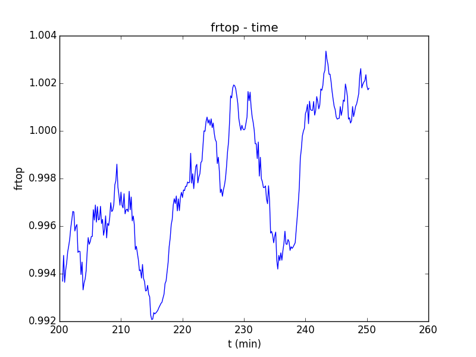
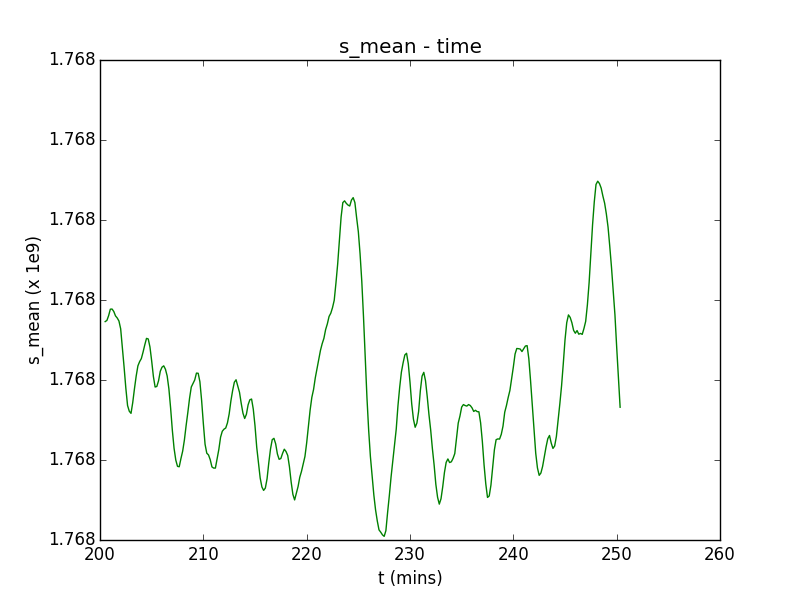
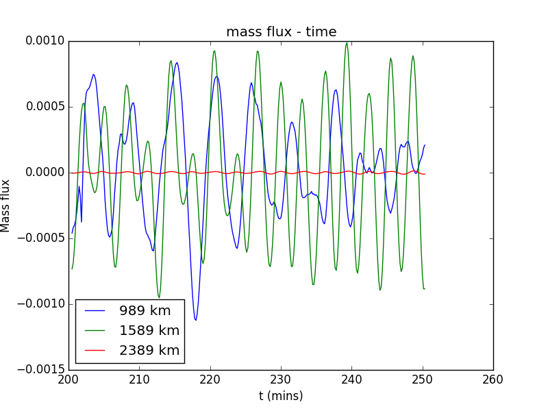
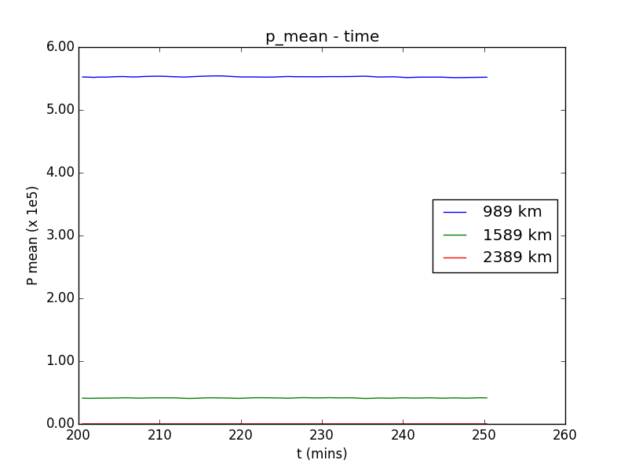
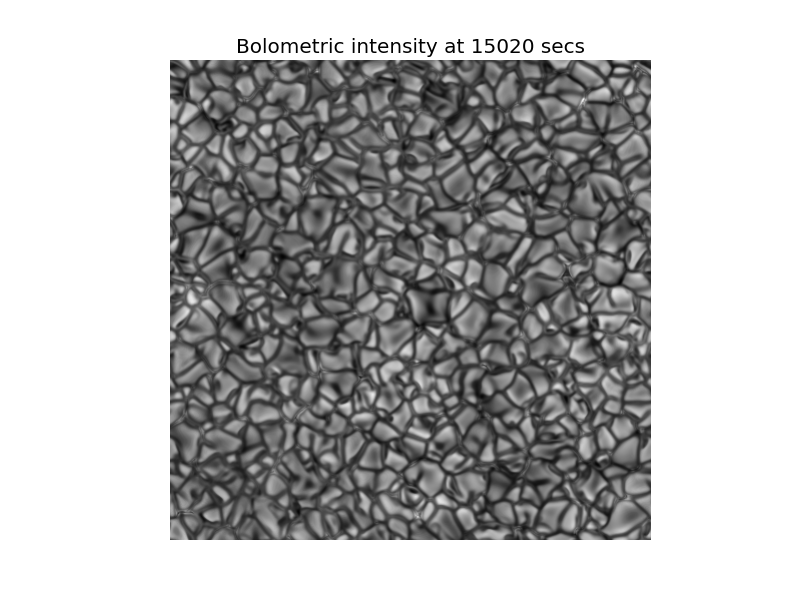
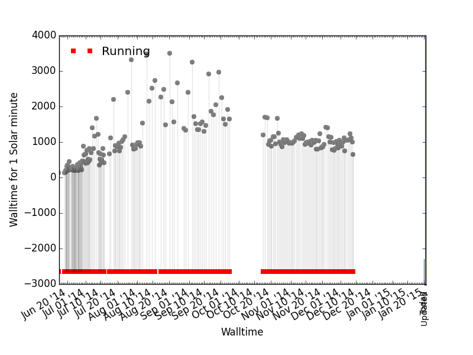

Model parameters:
Effective T = 5770.0 K
log g = 4.44
Inflowing s = 1.773E+09 erg/K/g
Numerical Specs:
Scheme: HLLMHD
Reconstruction: Constant






Page updated at 15:35 on 20-01-2015
Note:
This is an automatically generated/updated webpage intended to display results of a live simulation run.
Pardon me if this page does not make any sense to you.
Either you are here by chance or I have asked you to check this.